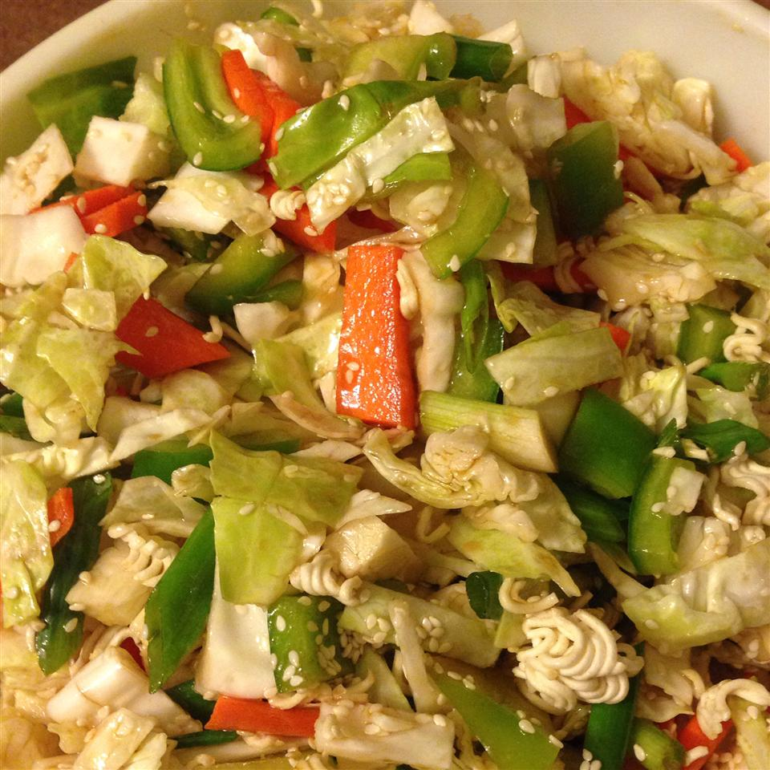

Asian Salad

This salad is appreciated by everyone because of its unique blend of flavors.
Ingredients
- 2 (3 ounce) packages ramen noodles, crushed
- 1 cup blanched slivered almonds
- 2 teaspoons sesame seeds
- ½ cup butter, melted
- 1 head napa cabbage, shredded
- 1 bunch green onions, chopped
- ¾ cup vegetable oil
- ¼ cup distilled white vinegar
- ½ cup white sugar
- 2 tablespoons soy sauce
Steps
- In a medium skillet over low heat brown ramen noodles, almonds, and sesame seeds with melted butter or margarine. Once browned, take off heat and cool.
- In a small saucepan bring vegetable oil, sugar, and vinegar to boil for 1 minute. Cool. Add soy sauce.
- In a large bowl, combine shredded napa cabbage and chopped green onions. Add the noodle and soy sauce mixture. Toss to coat. Serve.